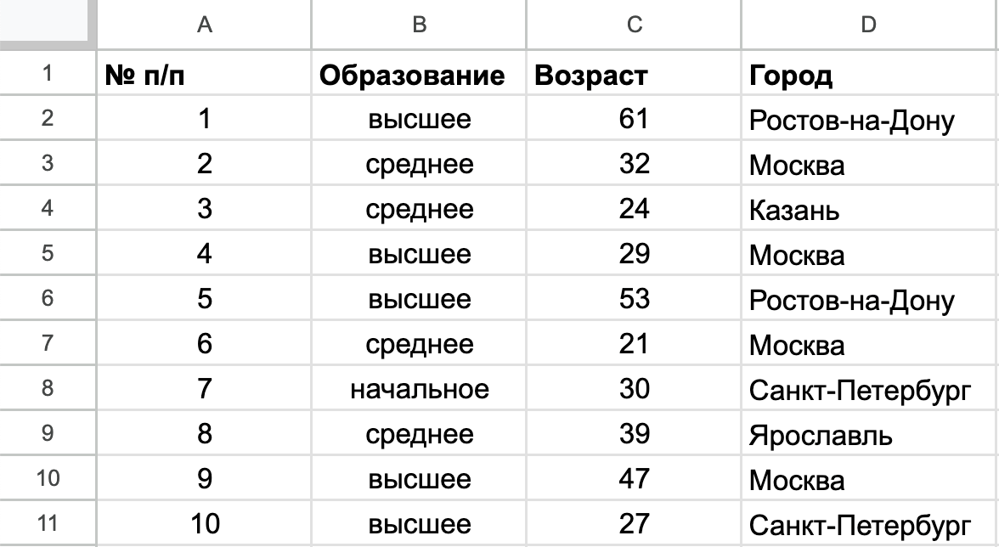
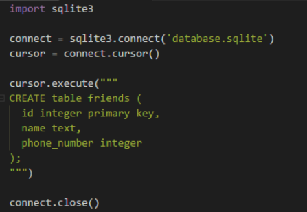

Введение в базы данных и SQL
Ознакомиться с теоретическим материалом и ответить на вопросы
Базы данных — набор информации, которая организована тем или иным способом. Нужны они для хранения большого количества однотипной информации. В качестве простого примера базы данных может служить список контактов у вас в телефоне — где хранятся их имена, телефоны, или адреса и тд.
Привдите пример, где могут использоваться базы данных
Самый простой вариант базы данных - это одна таблица, такая БД называется
плоской.
Строки в таблице называются
записями в БД, а столбцы -
полями.
Например, в таблице ниже поля - "№ п/п", "Образование", "Возраст", "Город"

Для работы с БД существует язык SQL. SQL — декларативный язык программирования, применяемый для создания, модификации и управления данными
На занятии рассмотрим три основных запроса SQL:
- CREATE (используется для создания таблиц)
- SELECT (для получения данных из таблиц)
- INSERT (для добавления записей в таблицы)
- DELETE (удалить запись из таблицы)
CREATE
CREATE TABLE в SQL - это команда, используемая для создания новой таблицы в базе данных. Она определяет структуру таблицы, включая имена столбцов, типы данных, ограничения и другие параметры.
Синтаксис запроса CREATE:
CREATE table имя_таблицы (
имя_столбца1 тип1,
имя_столбца2 тип2,
);
Основные типы данных, которые можно указать:
Null - означает пустую запись и отсутствие значения
Integer - целые числовые значения
Real – небольшие числа
Text - текстовая информация, аналог string в Python и Javascript
Пример запроса:
CREATE table users (
id integer primary key,
education text,
age integer,
town text
);
Вы могли заметить, что у поля id после указания типа (integer), также указано
primary key
Это означает, что этот столбец - это первичный ключ. Первичный ключ (Primary Key) - это один или несколько атрибутов (столбцов) в таблице базы данных, которые однозначно идентифицируют каждую запись (строку) в этой таблице.
Основные характеристики первичного ключа:
Уникальность: Значение первичного ключа должно быть уникальным для каждой записи в таблице. Не допускается наличие двух или более записей с одинаковым значением первичного ключа.
Не null: Значение первичного ключа не может быть пустым (NULL). Каждая запись должна иметь определенное значение первичного ключа.
Стабильность: Значение первичного ключа не должно часто меняться. В идеале, оно должно оставаться постоянным на протяжении всего времени существования записи. (хотя это и не всегда возможно, например, если в качестве первичного ключа используется фамилия и человек сменил фамилию).
Однозначность: Первичный ключ должен однозначно определять запись.
Задание 1. С помощью онлайн редактора SQL, создайте таблицу по следующим критериям:
1. Название таблицы friends
2. Столбцы: id (целое число, первичный ключ), name (строка), phone_number (целое число)
ссылка на редактор
Введите запрос в поле ниже:
INSERT
Запрос INSERT в SQL предназначен для добавления новых данных (записей, строк) в таблицу базы данных. Он говорит базе данных, какие значения нужно добавить и в какие столбцы таблицы.
Синтаксис запроса INSERT:
INSERT into имя_таблицы values (значение1, значение2,...)
Пример запроса:
INSERT into users values (1, "высшее", 34, "Томск")
Задание 2. Доабавьте в созданную таблицу friends 5 любых записей
Введите запрос в поле ниже:
SELECT
Запрос SELECT в SQL - это основной способ извлечения данных из базы данных. Он позволяет выбрать определенные столбцы и строки из одной или нескольких таблиц на основе заданных условий. Это один из самых важных и часто используемых SQL-запросов.
Синтаксис запроса SELECT:
SELECT столбец1, столбец2,... FROM имя_таблицы
SELECT: Ключевое слово, указывающее, что мы хотим выбрать данные.
column1, column2, ... (или *): Список столбцов, которые мы хотим извлечь. Если вы хотите выбрать все столбцы таблицы, можно использовать символ *.
FROM table_name: Указывает таблицу, из которой мы выбираем данные.
Пример запроса:
SELECT * FROM users
Задание 3. Выведите все записи из созданной таблицы friends
Введите запрос в поле ниже:
Задание 4. Выведите только столбцы id, name из созданной таблицы friends
Введите запрос в поле ниже:
Задание 5
Сделать новую таблицу с именем cars, содержащую поля id первичный ключ, mark – текст, обозначабщий марку машины, color - текст - цвет машины, number - число - гос номер машины
Введите запрос в поле ниже:
Добавьте в нее 5 любых записей
Введите запрос в поле ниже:
Выведите таблицу на экран
Введите запрос в поле ниже:
SQL + Python
Для работы с SQL в Python существует библиотека
sqlite3
1. Создайте файл bd.py (где угодно)
2. Имортируйте библиотеку
import sqlite3
Чтобы работать с базами данных, сначала нужно создать или подключиться к существующей БД.
Это можно сделать с помощью
connect = sqlite3.connect("database.sqlite").
databade.sqlite - название файла БД.
3. Создайте БД с помощью кода выше
Теперь в переменной connect хранится ссылка на нашу БД, с которой мы можем работать. Но чтобы отправлять запросы базе данных, нужно создать
специальный курсор
cursor = connect.cursor()
4. Создайте курсор
Чтобы отправлять запросы, у курсора существует метод
execute cursor.execute("sql выражение"). Посденей строкой нужно обязательно
закрыть соединение с помощью
connect.close()
Пример итогового кода:

5. Создать таблицу из Задания 5, используя Python (выполнить код)
Добавление записей аналогично созданию таблицы за исключением того, что нужно после execute испольнить
connect.commit()
, чтобы результаты сохранились в БД
6. Добавиь значения в созданную таблицу
Выполнение запроса SELECT также немного отличается, так как мы получаем какой-то ответ от БД (строки таблицы, данные).
И чтобы это сделать нужно после выполения запроса к таблице выполнить
result = cursor.fetchall().
Теперь переменная result создерижит то, что нам отправила БД, попробуйте вывести ее на экран.